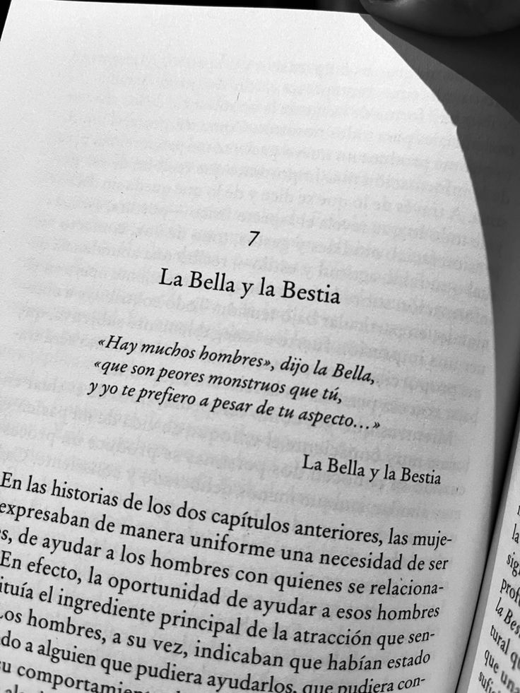
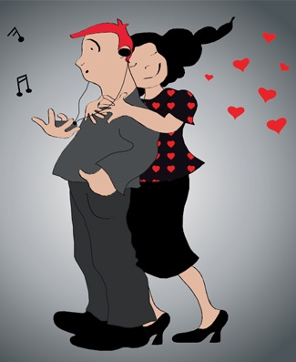

Amar demasiado puede llevar a relaciones desequilibradas, donde la mujer sacrifica su bienestar por la otra persona. Este fenómeno puede ser resultado de diversas experiencias y creencias personales.
Las mujeres que aman demasiado pueden experimentar ansiedad, depresión y problemas de autoestima. Es crucial reconocer estos patrones y buscar ayuda profesional.
El primer paso es reconocer el problema. La auto-reflexión, la terapia y el establecimiento de límites saludables son esenciales para romper con estos patrones de comportamiento.